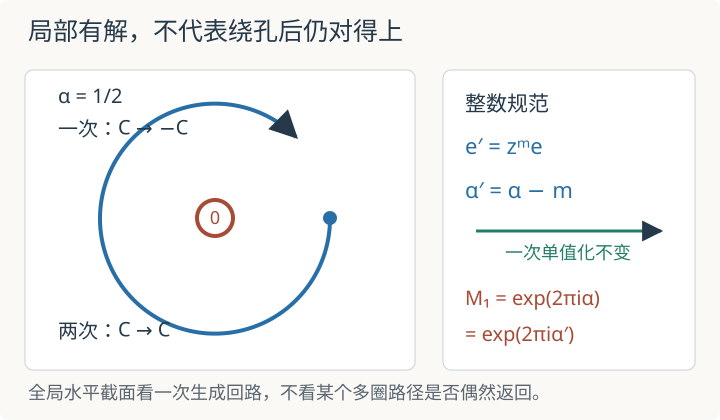

本页目录
基础衔接 08 · 联络、水平截面与 D-模：绕孔一周留下什么
先修：层与局部系统、微分形式。目标：在 \(\mathbb C^*\) 上完整求解一个秩一联络，区分局部水平解、全局单值解与多圈偶然返回，再把微分方程写成 D-模作用。参数 \(\alpha\) 在正文可取复数，交互实验为便于画图只取实数。
1. 每个小区域都有解，为什么绕一圈却对不上
令 \(X=\mathbb C^*=\mathbb C\setminus\{0\}\)，在平凡秩一线丛中固定基向量 \(e\)。对局部函数 \(f\) 定义
联络不是 \(\mathcal O_X\)-线性映射，因为微分会看到函数变化；它满足 Leibniz 规则
水平截面是满足 \(\nabla(fe)=0\) 的截面，因此
在不绕住原点的单连通小区域上，可以选定一个 \(\operatorname{Log}z\) 分支，于是
这条公式首先是局部解析解。若 \(\alpha\) 不是整数，\(z^\alpha\) 不能在整个 \(\mathbb C^*\) 上选成单值函数；局部能写出解，不等于存在全局非零水平截面。
2. 到普适覆盖上，单值化变成一次平移
用普适覆盖坐标 \(\zeta\in\mathbb C\)，令 \(z=e^\zeta\)。此时 \(dz/z=d\zeta\)，水平解成为
沿正向绕原点一周对应 \(\zeta\mapsto\zeta+2\pi i\)，所以解被乘上
绕行 \(w\) 次则 \(M_w=e^{2\pi i\alpha w}\)。这个乘数叫单值化；它比较解析延拓前后的同一局部解。一次正向绕行生成 \(\pi_1(\mathbb C^*)\cong\mathbb Z\)，因此判断是否存在全局非零水平截面必须检查 \(M_1=1\)，不能只挑某个 \(w>1\)。
例如 \(\alpha=1/2\) 时，\(M_1=-1\)，两圈后 \(M_2=1\)。这不产生 \(\mathbb C^*\) 上的全局非零水平截面；它只说明把回路走两次后符号再次返回。对本秩一复联络，

3. 整数规范变换改表达，不改单值化
在 \(\mathbb C^*\) 上，\(z^m\) 对任意整数 \(m\) 都是处处可逆的代数函数。改用基
时，
所以新参数为
同一个截面若原来写成 \(f e\)，现在写成 \(f'e'\)，则 \(f'=z^{-m}f\)；水平系数由 \(z^\alpha\) 变为 \(z^{\alpha-m}\)。由于 \(m\) 是整数，
参数的实数代表改变了，单值化没有改变。这和 Berry 联络中局部规范势改变、闭合回路相位保持的结构相似，但对象不同：这里是复代数曲线上的平坦联络，不是 Hilbert 空间本征态的 Berry 联络。
还要限定空间。\(z^m\) 在 \(\mathbb C^*\) 上可逆，却在紧化的 \(\mathbb P^1\) 上可能在 \(0\) 或 \(\infty\) 有零点、极点；因此不能无条件说它保持某个已经固定的 \(\mathbb P^1\) 延拓。
先预测：默认 \(\alpha=0.5\)、规范整数 \(m=0\)、绕行 \(w=1\) 时是否有全局非零水平截面？静态默认 \(\alpha'=0.5\)，\(M_w=e^{\pi i}=-1\)，一次单值化非平凡，所以答案是否。若把 \(w\) 调成 2，当前回路乘数变为 1，但全局判断仍使用 \(M_1=-1\)。
4. 代数、解析与正则奇点要分账
代数上，\(\mathbb C^*\) 写成 \(\mathbb G_m=\operatorname{Spec}\mathbb C[z,z^{-1}]\)，正则函数是有限 Laurent 多项式。联络 \(d-\alpha\,dz/z\) 对这个代数函数环有意义。若要求水平截面本身也是全局代数正则函数，则方程 \(zf'=\alpha f\) 的非零解只能是 Laurent 单项式 \(cz^k\)，所以仍要求 \(\alpha=k\in\mathbb Z\)。
解析上，可以在小区域选 \(\operatorname{Log}z\)，并沿路径解析延拓；这产生水平截面的局部系统及其单值化。代数联络与解析局部系统之间的系统对应需要 Riemann-Hilbert 理论的条件，本例只展示最小的秩一机制。
在 \(X=\mathbb C^*\) 内，这个联络没有奇点。把它看成 \(\mathbb P^1\) 上允许在 \(0,\infty\) 有极点的联络时，\(dz/z\) 在两处都只有一阶对数极点，因此属于正则奇点模型。像 \(d-dz/z^2\) 这样的高阶极点会产生 \(e^{-1/z}\) 型行为，属于本讲没有处理的不规则奇点；不能仅凭“也有单值化”把两者并在同一分类里。
本例曲率为零：\(d(dz/z)=0\) 在 \(\mathbb C^*\) 上成立，秩一时联络一形式与自身的楔积也为零。平坦意味着局部有水平解，不意味着单值化必为恒等。
5. 从联络进入 D-模语言
令 \(D=z\partial_z\)。联络沿这个向量场的作用为
它满足
正是微分算子作用所需的 Leibniz 规则。水平方程就是
D-模把“函数乘法”和“求导”同时作为作用保存，并要求 \([\partial_z,z]=1\)。这里由一个秩一平坦联络得到最简单的 D-模入口；一般 D-模可以有奇异支撑、非局部自由底层模和更复杂的正则或不规则行为，不能全部改写成一个 \(z^\alpha\)。
在几何 Langlands中，D-模承担自守侧的微分方程数据，局部系统承担谱侧的平坦运输数据。本讲让“联络、水平截面、单值化、微分算子作用”各自成为可计算对象，但没有构造 \(\operatorname{Bun}_G\) 上的 D-模范畴或证明 Riemann-Hilbert、几何 Langlands 对应。
6. 两道迁移题
题一。 取 \(\alpha=3/2\)，并作规范变换 \(e'=ze\)。求 \(\alpha'\)、一次与两次绕行的单值化，并判断是否存在全局非零水平截面。
查看一次生成回路
\(m=1\)，所以 \(\alpha'=1/2\)。一次绕行给 \(e^{2\pi i(3/2)}=-1\)，两次给 \(1\)；规范变换后结果相同。因为一次生成回路的单值化不是 1，所以不存在全局非零水平截面。
题二。 取 \(\alpha=-2\)。写出一个全局代数水平截面，并选择整数规范使新参数为零。为什么这不自动给出 \(\mathbb P^1\) 上同一个无奇点联络？
查看空间边界
\(f=z^{-2}\) 满足 \(zf'=-2f\)，所以 \(z^{-2}e\) 是 \(\mathbb C^*\) 上的全局代数水平截面。取 \(m=-2\) 得 \(\alpha'=0\)，此时 \(e'=z^{-2}e\) 本身水平。但 \(z^{-2}\) 在 \(\mathbb P^1\) 的 \(0\) 处有极点；这个规范只保证 \(\mathbb C^*\) 上的等价，不保持预先固定的无极点延拓。
速查与资料
\(\nabla=d-\alpha\,dz/z\) 的局部水平解为 \(z^\alpha\)；一次单值化为 \(e^{2\pi i\alpha}\)；整数规范 \(e'=z^me\) 给 \(\alpha'=\alpha-m\) 而不改单值化；\(D=z\partial_z\) 把水平条件写成 \((D-\alpha)f=0\)。联络的 Leibniz 规则与 de Rham 复形见 Stacks Project：Connections；D-模的进一步入口见 Ginzburg：Lectures on D-modules。本讲只处理 \(\mathbb C^*\) 上秩一、平坦、正则奇点模型。核查：2026-09-08。